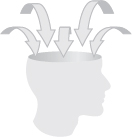
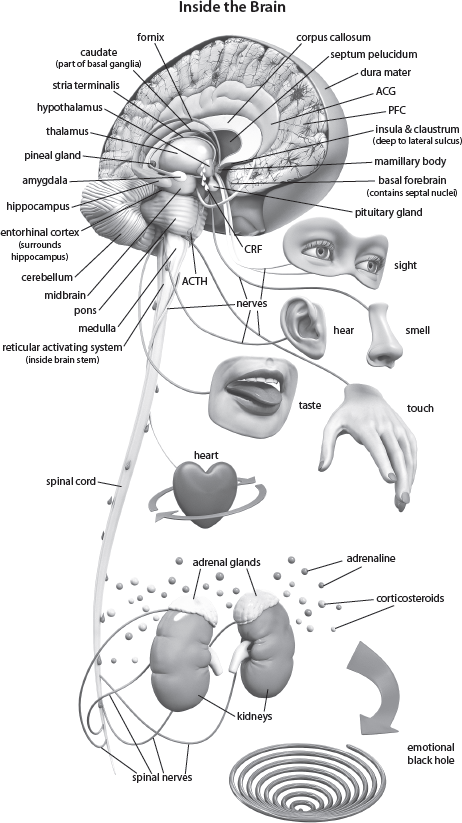
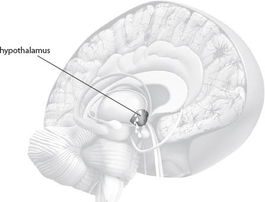
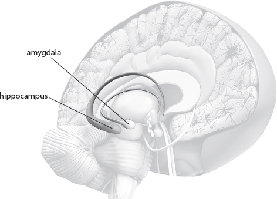
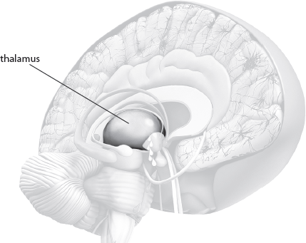
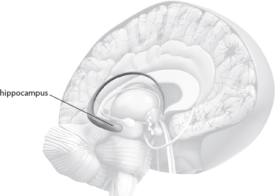

|
11 Gather Step 1 |
 |
You have to develop disciplined thought lives, and part of that is increasing your awareness of what you are allowing into your mind. The gather step is, therefore, all about becoming aware of all the signals that are coming into your mind from the external environment through the five senses and understanding the internal environment of your mind. So as you answer the questions in this section, you are focusing on developing awareness, which means you are starting the process of bringing those rogue thoughts into captivity.
The Signals Come from Two Sources
These signals come from two sources: (1) the external environment that comes in through the five senses, electromagnetic and quantum signals, and (2) the thoughts deep in the nonconscious metacognitive part of your mind (your memories).
Let me explain what I mean. Perhaps, as you read this, you have some of your favorite music playing in the background. You might be sitting in a comfortable chair, smelling a scented candle while savoring a piece of fruit. If you are in this idyllic setting, all five of your senses—sight, sound, smell, touch, and taste—will be your link between the external world and the internal world of your mind.
|
QUESTION: What are you experiencing through your five senses as you are reading this? Try to describe this in as much detail as possible. This is a simple exercise just to help you become aware of what is coming into your mind. This simple awareness can be developed to the point where you learn not to let any thought go through your mind unchecked. |
As we move on with this section, there is a lot of brain information. Take your time and just enjoy how intricately God has made you. And please remember, you are brilliant and intelligent and totally capable of understanding because you are made in his image (Gen. 1:26).
The Signals Enter the Brain
This incoming information then travels through some astonishing brain structures (some of which include the thalamus, insula, and basal ganglia) that flavor, enrich, and distribute the information all along the way. You think with groups of brain areas (circuits and columns), not with single brain areas. So once the information enters the brain, it is a signal that creates major cascading, intrinsic (inside your brain) activity. The circuits and columns around the basal ganglia (deep down inside the middle of the brain), for example, get the brain into a state of expectation as preparation to build the new, incoming information. Part of this activity is the movement of thoughts (existing memories), linked in some way to the incoming information, moving from the nonconscious metacognitive level to the conscious cognitive level (see chap. 8 to remind yourself of these concepts).

These thoughts in your brain look like trees in a forest. And as the signals sweep through these trees like a wind, research shows they will activate around four to seven[1] thought trees (memories) that will then move into the conscious, and you will become aware of them (see chap. 8). I call this the “breeze through the trees.”
“Magic Trees of the Mind” Golgi Stain
|
QUESTION: What thoughts are bubbling up into your conscious mind right at this moment? Focus in and see how many there are. |
Thoughts Have an Emotional Component
When you think, you also feel. This is because thoughts have an emotional component in addition to the information, or what the actual memory is about. This means that when you bring a thought into consciousness, you also bring up the attached emotion. When the thought along with its emotions bubble up into the conscious mind, you feel the emotions.
So there is a difference between emotions and feelings; every thought has emotions as part of its structure, and they are stored in the nonconscious mind. When the thoughts move into the conscious mind, we feel the emotions of the thoughts.
Attitude
Attitude is a state of mind—a thought plus its attached emotions—and it influences what you say and do.
If the attitude that is activated is negative, then the emotional response will naturally be a negative or stressful feeling. If the attitude is positive, the feeling will be peaceful. The truth is that your attitude will be revealed no matter how much you try to hide it.
|
QUESTION: Can you determine the attitude of the thoughts that are currently moving through your conscious mind? Try to focus in on the feelings they are generating and describe them in as much detail as possible. How does your mind feel? How does your body feel? |
Thoughts Can’t Be Hidden; Attitudes Aren’t Harmless
Your attitudes—positive or negative—not only can’t be hidden from others, but they also have a profound impact on your own brain and body. You can refer back to chapter 7 for a reminder of how this works.
When a thought, plus its emotions (attitudes), moves into the conscious mind, it produces a signal. The hypothalamus (see image), which does many amazing things—one of which is to respond to our emotional state of mind or our attitude—responds to this signal.
The Hypothalamus Responds
Part of what the hypothalamus does is alert the rest of the brain to release chemicals like serotonin and glutamate to help with the process of building a new memory. The endocrine system is a collection of glands and organs that mostly produce and regulate your hormones. And the hypothalamus is often referred to as the “brain” of the endocrine system, controlling things like thirst, hunger, body temperature, and the body’s response to your emotional life. The hypothalamus is also like a pulsating heart responding to your emotions and thought life, greatly impacting how you function emotionally and intellectually.

This means that if you are anxious or worried about something, the hypothalamus will respond by releasing more chemicals than it should. This in turn causes the pituitary to release too many chemicals, and the result is neurochemical chaos. So instead of being focused in our thinking, we have chaotic and foggy thinking.
The endocrine system secretes the hormones responsible for organizing the trillions of cells in your body to deal with focus and learning. Negative, toxic thoughts have the opposite effect, shifting your body’s focus to protection and survival, thus reducing your ability to process and think with wisdom or grow healthy thoughts.
However, if you change your attitude and determine to apply God’s excellent advice not to worry, the hypothalamus will cause the secretion of chemicals that facilitate the feeling of peace, and the rest of the brain will respond by secreting the correct formula of neurotransmitters—chemicals that transmit electrical impulses—for thought-building and clear thinking.
|
QUESTION: Do the thoughts in your conscious mind at this moment make you feel peace or worry? Be aware of how your body feels. Are you tensing your shoulders? Is there an adrenaline rush going through your body? |
Although you may not be able to control your environment all of the time, you can control how it affects your brain.
You Can Control How the Signals Affect Your Brain
How? The incoming information is still in a temporary state. It has not yet lodged itself into your memory, or become a part of your spirit, which defines who you are. You can choose to reject the presently activated thoughts and the incoming information, or you can let the information make its way into your mind, soul, and your spirit, eventually subsiding in your nonconscious and becoming automatized, dominating who you are. Even though you can’t always control your circumstances, you can make fundamental choices that will help you control your reaction to your circumstances and keep toxic input out of your brain.
|
QUESTION: Do you feel like a victim of or a victor over what is swarming through your mind at the moment from the external and internal signals? |
Brain Structures and Circuits That Help You Make Good Choices

The amygdala and hippocampus, and their connected circuits, can help you make good choices. The amygdala deals with the passionate, perceptual emotions attached to incoming thoughts and all the thoughts already in your head. The hippocampus deals with memory and motivation.
This is where you consciously step up to center stage; you need to choose, and decide whether or not these incoming thoughts will become part of who you are. Let’s look more closely at how you control this decision to accept or reject information.
|
QUESTION: Did you know you are able to accept or reject the thoughts flowing through your mind? |
The Amygdala: Perceptual Library
The amygdala, a double almond–shaped structure located in your brain, is designed to keep you emotionally alert. When you become toxic in your thinking, it steps up to protect you from any threat to your body and mind—such as danger or stress. It puts the passion behind the punch of memory formation by influencing another structure that is very important to memory formation, the hippocampus, enabling you to give more focused attention to your existing memories. The amygdala is basically designed to deal with positive love-based emotions like joy and happiness, but it doesn’t work as well when you are in a negative state of mind.
The Thalamus Acts Like a Transmitter Station
The thalamus (deep in the middle of the brain) functions like a transmitter station, alerting the amygdala of any incoming information from the five senses. How does it do this?
The amygdala functions like a library, storing the emotional perceptions that occur each time a thought is built. In other words, every time you build a memory, you activate emotions. The endocrine system in the brain has to release the correct chemicals—the molecules of emotion and information—necessary to build healthy or toxic memories. Because the amygdala is in constant communication with the hypothalamus, which secretes chemicals in response to your thought life, you are able to feel your body’s reaction to your thoughts. These physical reactions—rapid heartbeat and adrenaline rushes—force you to decide whether to accept or reject the information, basing your decision on how you feel physically.

To help you even more, the amygdala has lines of communication connected to the frontal lobe, which controls reasoning, decision-making, analyzing, and strategizing—all executive-level functions. This connection enables you to balance the emotions you physically experience in your body and allows you to react reasonably. Here is the exciting part: At this moment you can choose not to think about this issue anymore, and those temporary thoughts will disappear.
|
QUESTION: You do not have to be dominated by your perceptual library—in other words your emotions. Do you feel dominated by your feelings that have arisen out of the thoughts active in your mind? |
The Hippocampus: Memory Converter
If you don’t manage to stop thinking about the issue, however, all the information, including the awakened toxic or nontoxic attitude, will flow into a sea horse–shaped structure called the hippocampus.
The hippocampus is a sort of clearinghouse for thoughts. It classifies incoming information as having either short- or long-term importance and files it accordingly, converting temporary thoughts into permanent thoughts that become part of who you are (a lot of this happens at night while you are sleeping). To do this, the hippocampus has to work with the central hub of the brain—a group of structures with circuits that integrate all the activated memories and work with the hippocampus to convert information into your permanent memory storage.

This is where you begin some serious reflection in order to make some life-changing decisions.
|
QUESTION: Ask yourself, “Do I want this information to be a part of me?” |
Stress
A good point to remember is that toxic memories create the negative stage two and negative stage three of stress. Stage one of stress is good and keeps you alert and focused. Stage two and three are normal stress gone wrong.
The hippocampus is extremely vulnerable to stress because it is rich in stress hormone receptors that are normally used to reinforce memories. These receptors are like tiny doorways on cells that receive chemical information. For these brain cells, excessive stress is almost like an explosion, causing the hippocampus to lose cells and shrink. This affects the communication between the hippocampus and the central circuits of the brain, keeping it from building new good thoughts (memories) as well as causing memory loss. This is seen a lot in depression, Alzheimer’s, dementias, and other neuropsychiatric disorders.
|
QUESTION: Toxic thoughts are the result of bad choices. Stress stages two and three are your body’s reaction to toxic thoughts. Can you feel the stress reaction—heart pounding, adrenaline pumping, or muscles tensing up in your body? |
Chapter 11 Summary
Let’s move to the reflection stage and see how the hippocampus works with the central hub circuits of the brain in building thoughts.